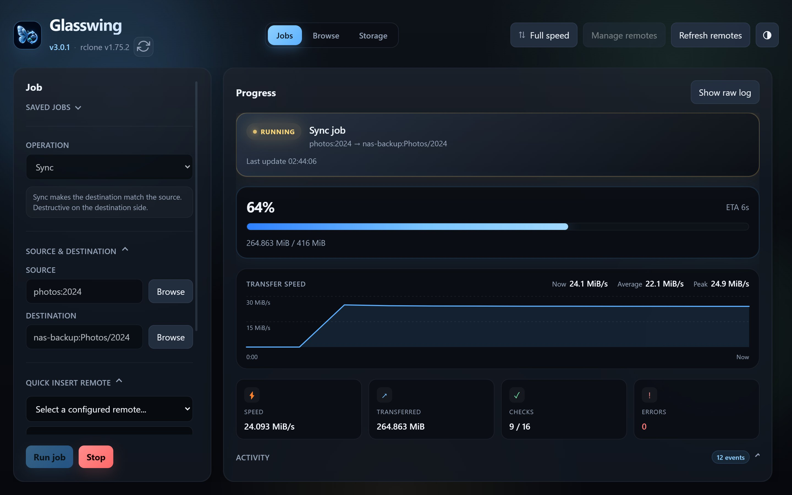
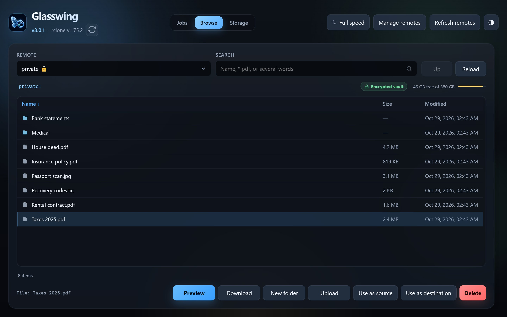
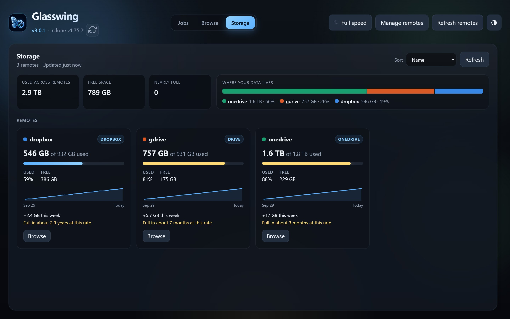
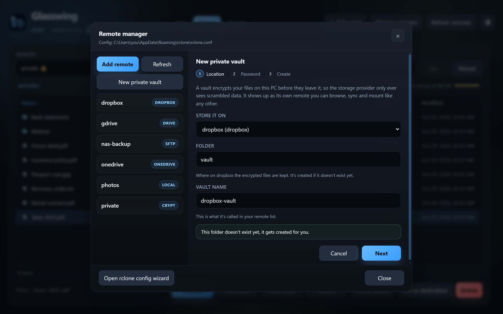

Glasswing
A free rclone GUI for Windows and Linux.
Sync, copy, browse, mount and encrypt (and much more) your Google Drive, OneDrive, Dropbox, S3 or whatever else rclone talks to. Without having to remember which flag does what.

$ rclone sync photos:2024 nas-backup:Photos/2024 \ --bwlimit 24M --transfers 3 -P Transferred: 240.957 MiB / 416 MiB, 58%, 24.116 MiB/s, ETA 7s Checks: 8 / 16, 50% Transferred: 6 / 16, 38% Elapsed time: 10.4s Transferring: * 2024/Kyoto/VID_4170.mp4: 61% /70Mi, 8.1Mi/s, 3s
Same rclone, less typing
That's the sync from the screenshot above, typed out by hand. It works great, until you need it again next week and can't remember if it was --transfers 3 or 4, or whether you meant sync or copy.
Glasswing runs exactly that command for you (you can even see it before it runs), saves it, and can do it every night at 2am while you sleep.
Run jobs and actually see what's happening
Copy, sync, move or bisync between any two remotes (or a local folder). While it runs you get the percentage, ETA, a live speed graph and a feed of what's being transferred, instead of a wall of log lines.
- Dry run first if you're not sure what a sync will delete
- Save jobs you run often and schedule them, they keep running from the tray
- Cap the bandwidth, all day or just during working hours
- Your own rclone flags still work if you need them

Browse any remote like a normal folder
Click through your cloud storage, search a whole remote, preview photos, PDFs, text, audio, video and even what's inside a zip or 7z. Drag files in to upload, download, make folders, delete. If you find the folder you want to back up, send it straight to a job.
Private vaults for the sensitive stuff
A little wizard sets up an rclone crypt remote for you: pick where it lives, set a password, done. Files get encrypted on your PC before they go up, file names included. In Glasswing it's just another remote, with a lock on it so you don't forget which one it is.
Know when a remote is filling up
The Storage tab shows used and free space for every remote in one place, plus how fast each one is growing. If something is on track to be full in a couple of months, it tells you, and the tab gets a little red dot when a remote hits 90%.
There's an "Empty trash" button for providers that keep deleted files around, which on Google Drive can be a surprising amount of space.

And a bunch of smaller things
Mount as a drive
Give a remote a drive letter and use it from Explorer, with a choice of cache mode. Windows only for now, and rclone needs WinFsp for it.
See the command first
Before a job runs you see the exact rclone command it's about to execute. Approve it once and it won't ask again for that job.
Missed a scheduled run?
If your PC was off at 2am, the job runs when Glasswing is back. You get a notification when a scheduled job starts, finishes or fails.
Folders open instantly
Recently visited folders are cached, so going back and forth in Browse doesn't mean waiting on the provider every time.
Expired sign-ins
When a provider's token runs out, hit Reconnect instead of setting the remote up again. You can view a remote's config too, with the secrets hidden.
Raw logs
If wanted you can see the direct rclone commands running with the raw logs.
Flip through previews
Opened a photo? Use previous and next to go through the rest of the folder without closing the preview.
Adding remotes
Most providers just need a browser sign-in. The good old rclone config wizard is one click away if you prefer it.
Three themes
The default is Glass, the dark see-through look. If that's not your thing there's Material, in light and dark. Go ahead and try them, the screenshots on this page change to your selection.

What's been happening
Glasswing gets updated a lot. Here are the last few releases:
- v3.1.0Windows context menu uploads (soon)
- v3.0.1Checks for new versions on startup, and lets you skip one
- v3.0.0The big one: storage dashboard, private vaults, the live speed graph and the Material themes
- v2.9.0Search a whole remote from the Browse tab
- v2.8.1Linux builds, as an AppImage and a .deb
- v2.8.0Scheduled jobs
- v2.7.5Bandwidth limits, also on a timetable
- v2.7.0Bisync, and a preview of the rclone command before a job runs
- v2.5.0Mount a remote as a drive
Getting started
- Install rcloneGrab it from rclone.org. If
rclone versionworks in a terminal you're good. - Download GlasswingFrom the releases page. There's an installer and a portable exe for Windows, and an AppImage and .deb for Linux.
- Add a remote (or don't)If you already use rclone, your remotes just show up. Otherwise open Manage remotes and add one.
What it doesn't do (yet)
Being honest here so you don't download it for the wrong reasons:
- No macOS build yet. It's on the list.
- Mounting only works on Windows for now.
- It doesn't install rclone for you, you need that first.
FAQ
Is Glasswing free?
Yep. Fully available on GitHub.
Do I need rclone installed?
Yes. Glasswing basically wraps your local rclone instance. Install rclone from rclone.org first and make sure it's on your PATH/available from the terminal/cmd.
Does it store any of my credentials?
No. It fully relies on your local rclone installation/configuration. Even adding remotes or anything similar in Glasswing only uses your local rclone installation
Which cloud providers does it work with?
Anything rclone supports: Google Drive, OneDrive, Dropbox, Amazon S3, Backblaze B2, pCloud, Mega, SFTP, WebDAV and MANY MORE.
Can I use rclone without the command line?
That's pretty much the whole point. Running jobs, browsing, adding remotes, mounting and setting up encryption all happen in the app. You can still add your own flags to a job when you need something specific.
Which operating systems are supported?
Currently Windows and Linux* are supported. MacOS is planned
* rclone mount is currently only only supported on windows.Found a bug or have an idea?
Open an issue on GitHub.